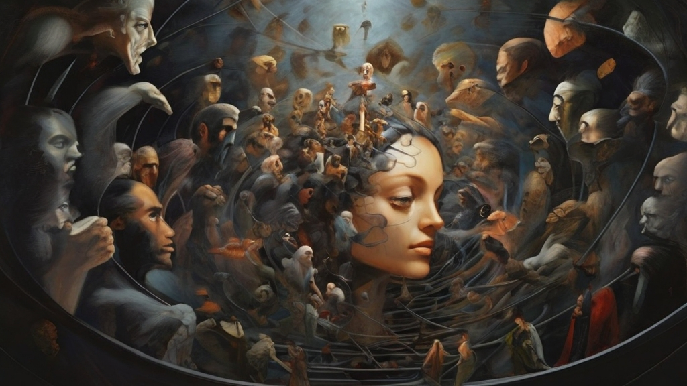

People are overwhelmed.

Cycle of Ethical Behavior
1. Fixate
2. Worsen social relations
3. Find and take environmental data, research could be
done, no “moral” or “ethical” limitations.
4. Fix existential limitations problem for group.
5. Become somewhat “sane” again.
6. Go to 1. Repeat literally ad infinitum.